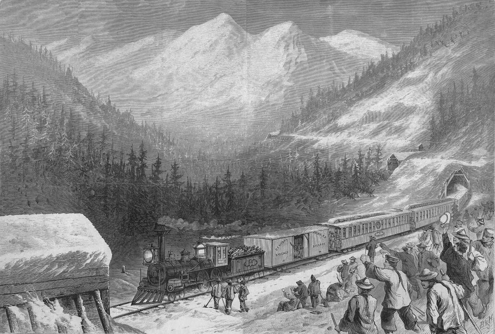
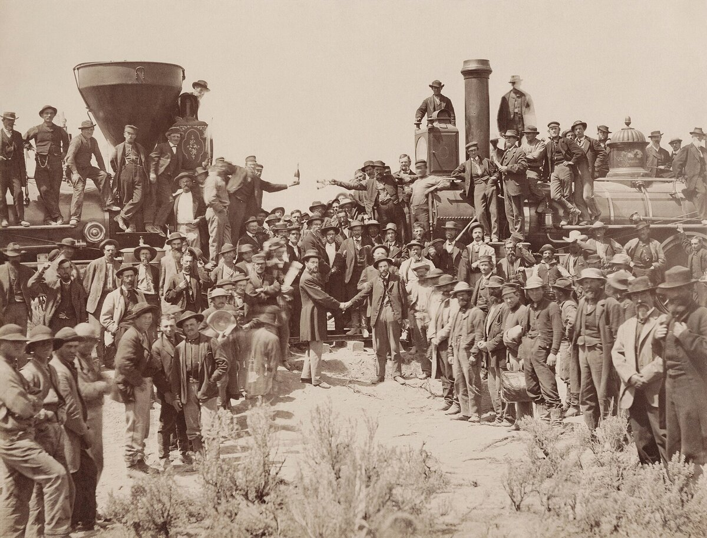
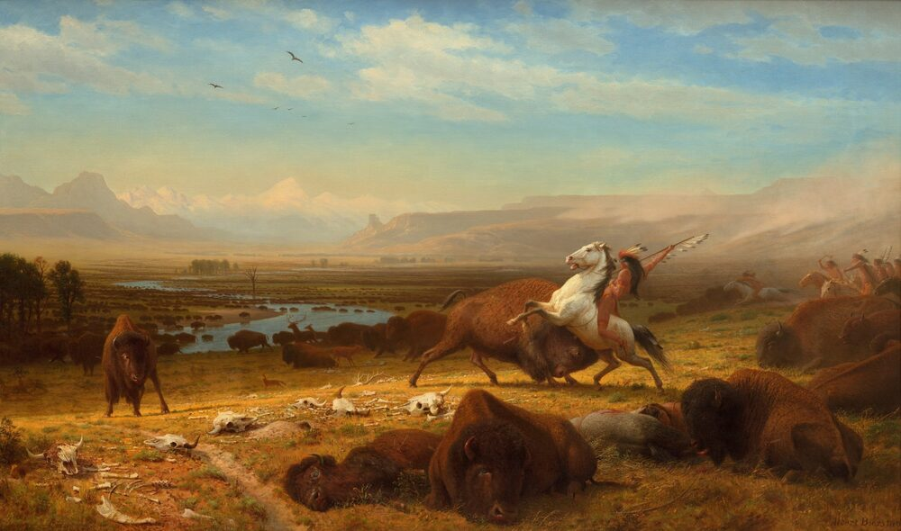

B1 · American History
The Transcontinental Railroad
Six months by wagon, or one week by train. The difference was built by people who were left out of the photograph.
Play the audio and follow along, then read it again on your own. Tap or hover over a highlighted word to see what it means.
Before 1869, getting from New York to San Francisco took about six months by wagon or by ship around South America. After 1869, on the new transcontinental railroad, it took about a week. Almost nothing else in the nineteenth century changed a country that fast.
Congress approved the plan in 1862, in the middle of the Civil War, and gave the work to two companies. The Union Pacific built west from Omaha, Nebraska. The Central Pacific built east from Sacramento, California. They were paid by the mile, which explains a great deal about how they behaved.
The Central Pacific had the harder problem: the Sierra Nevada, a wall of granite with heavy winter snow. The company could not find enough workers, so it began hiring Chinese immigrants, and then recruiting directly from southern China. At the peak, something like four out of five of its workers were Chinese.
They cut fifteen tunnels through solid rock, mostly by hand, with hammers, drills and black powder. Progress through the longest tunnel was measured in centimeters a day. Men worked through winters in snow tunnels, with the camp buried and the sky invisible for weeks. Hundreds died in accidents and avalanches, and the companies kept no careful record of how many.

They were paid less than white workers and had to buy their own food. In 1867 about three thousand of them went on strike for equal pay and shorter hours. The company cut off the food supply to the camps, and the strike ended in a week.
The Union Pacific, crossing the plains, had easier ground and a different problem: it was building straight through the hunting grounds of the Lakota, Cheyenne and Arapaho, who understood very well what the line meant. The army was sent to protect the work.
On 10 May 1869 the two lines met at Promontory Summit, Utah. A ceremonial golden spike was driven to join them, the news went out by telegraph, and cities across the country celebrated the same hour. The famous photograph shows the two locomotives and a crowd of officials and workers. No Chinese worker appears in it.

The effects were immediate. Goods that had cost a fortune to move became cheap. Towns appeared along the line because the line was there. Standard time zones were invented a few years later because the railroads could not run on hundreds of different local clocks.
For the Plains nations the railroad was the end of a way of life. It cut the buffalo herds in two, carried hunters who shot the animals from the train windows, and moved soldiers and settlers west faster than any treaty could be negotiated. Within twenty years the herds were practically gone.

Many of the Chinese workers went on to build other lines, and many were then pushed out of the country they had built across: the Chinese Exclusion Act of 1882 banned almost all immigration from China for sixty years. The railroad is usually told as a story about engineering. It is at least as much a story about who the country decided to count.
Key Vocabulary
- transcontinental crossing a continent
- granite a very hard gray rock
- a tunnel a passage cut through rock or under the ground
- a drill a tool for making holes
- an avalanche a mass of snow falling suddenly down a mountain
- to push to press or move something forward — careful: it means the opposite of pulling
- to go on strike to stop working in order to demand better pay or conditions
- a spike a large metal nail; railway rails are fixed down with them
- a telegraph a nineteenth-century system for sending messages along wires
- a herd a large group of animals that live and move together
The Transcontinental Railroad — B1 · American History · Renan the Teacher, English Language Academy · https://renangrossi.github.io/englishclasses/reading/b1/transcontinental-railroad.html
Interactive Exercises
Practice
Complete each exercise, then click Submit to see your score and an explanation for every answer.
Speaking & Writing
Discussion
There are no right answers here — use these to practice speaking, or write a short answer to each.
- The railroad made the country richer and destroyed a way of life at the same time. How should a history book handle that?
- The men who built most of the line are not in the photograph of its completion. Who gets left out of the pictures we take today?
- What is the biggest change in transport in your own country's history?